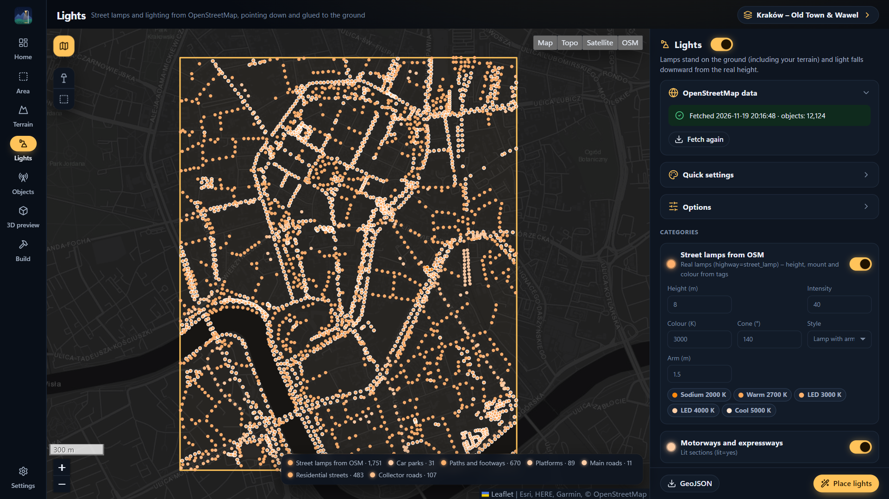
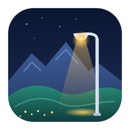

FS Opendata Scenery – Lights · Kraków Old Town


FS Opendata Scenery
TERRAIN · STREET LIGHTS · OBSTACLES
Real-world scenery for MSFS 2024, built from open data
Pick an area on the map. The app downloads free elevation data and OpenStreetMap, computes more accurate terrain, places real street lamps with light pointing down and builds a ready Community package.
- 1 m LiDAR terrain and worldwide DEMs
- Real street lamps from OpenStreetMap
- Light cast downwards, on the ground
- Flattened runways and lakes
- Obstruction lights and lighthouses
- Trees cleared from roads and water
- Your own GeoTIFF, ASC, XYZ, HGT
- 3D preview by night and by day
MSFS 2024MSFS 2024 SDKWindows 10 / 11English · Polski